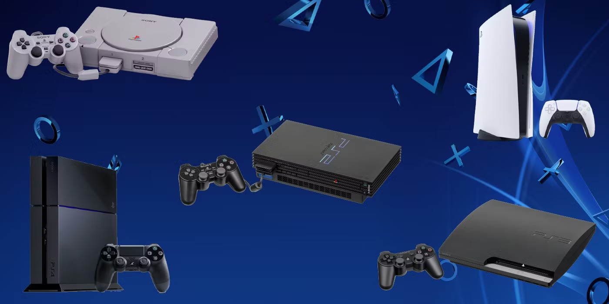
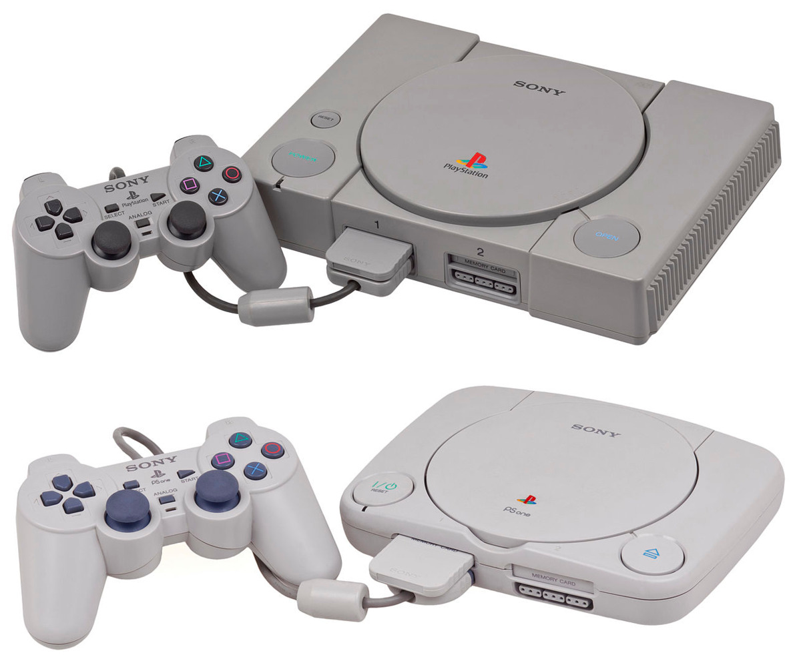
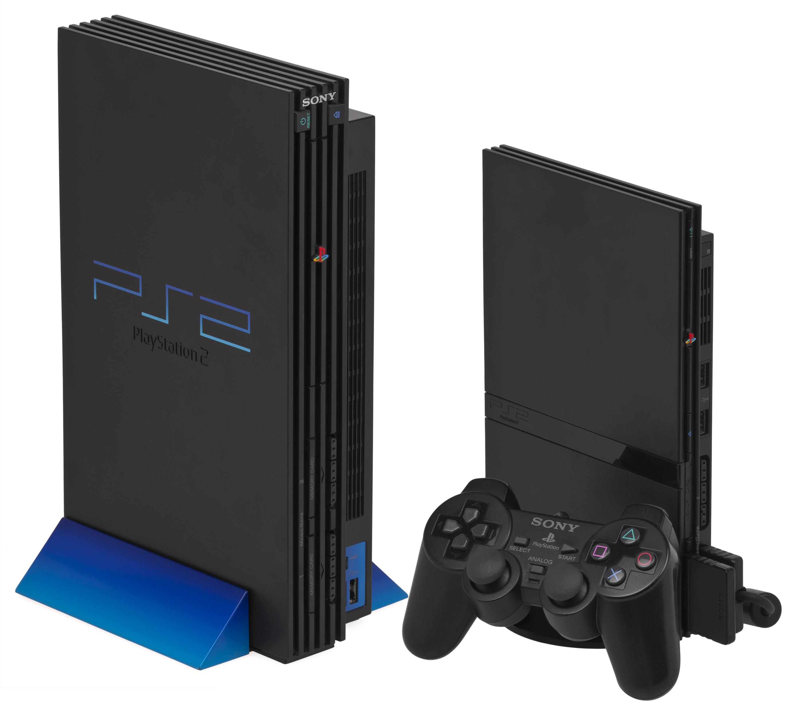
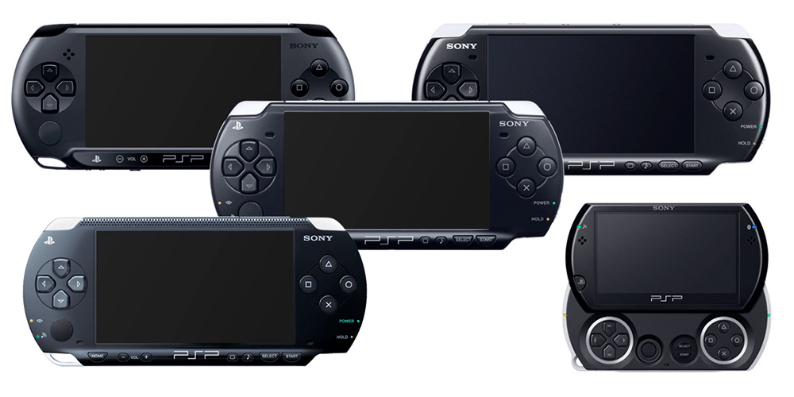
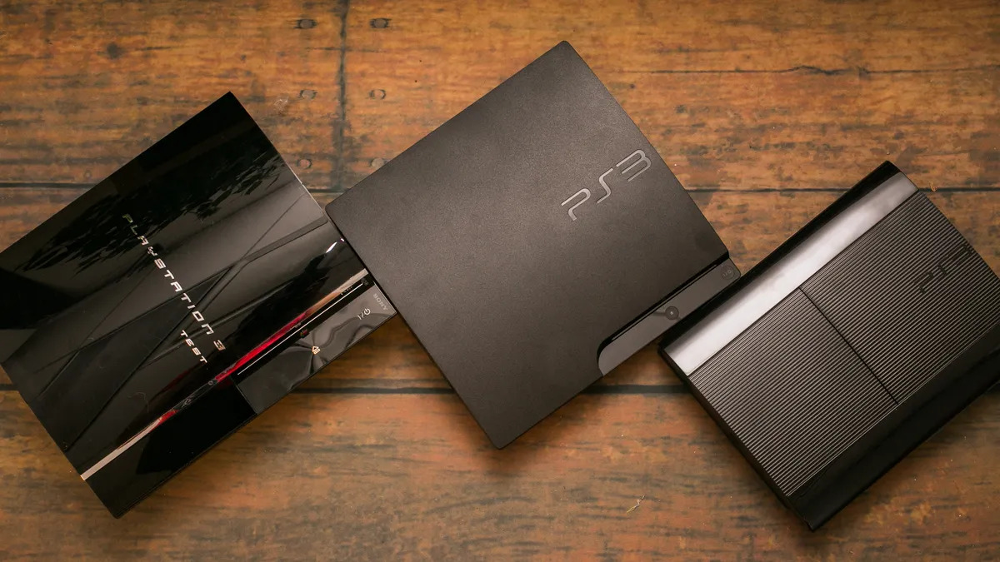
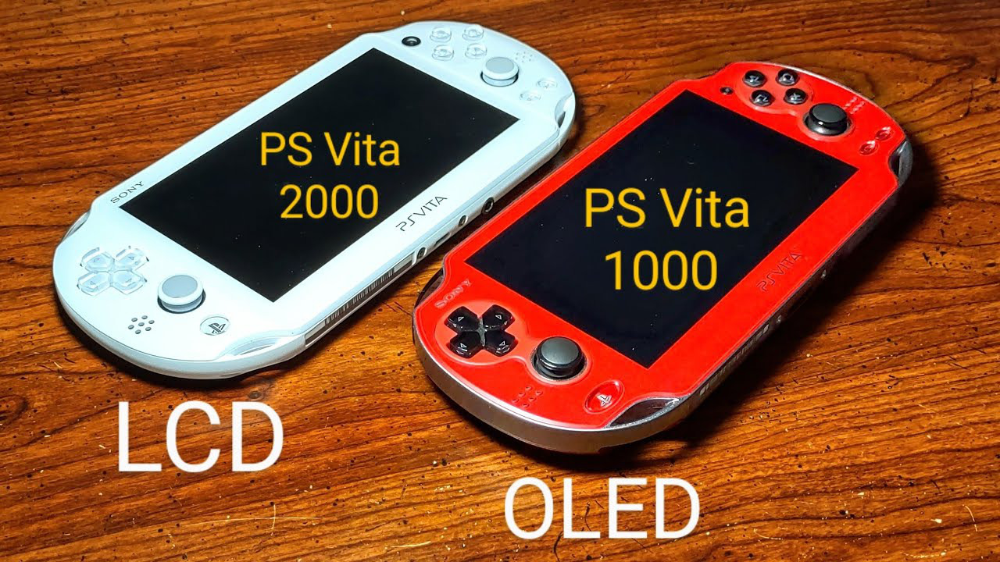
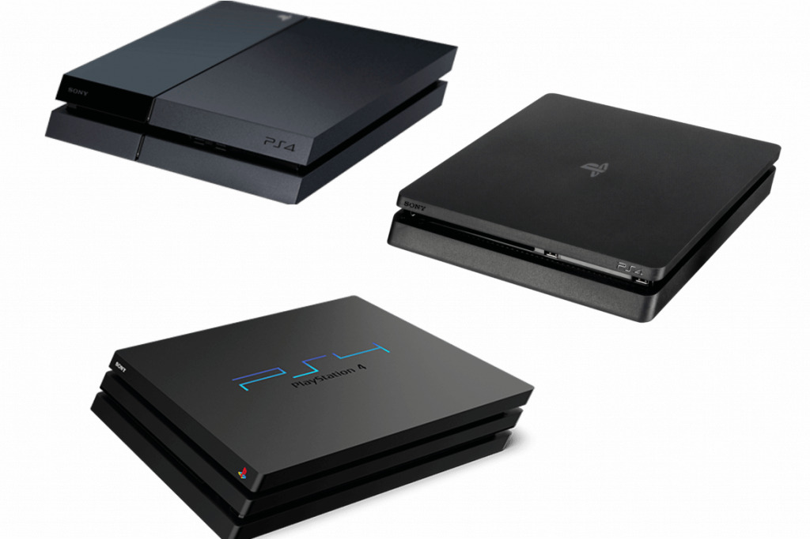
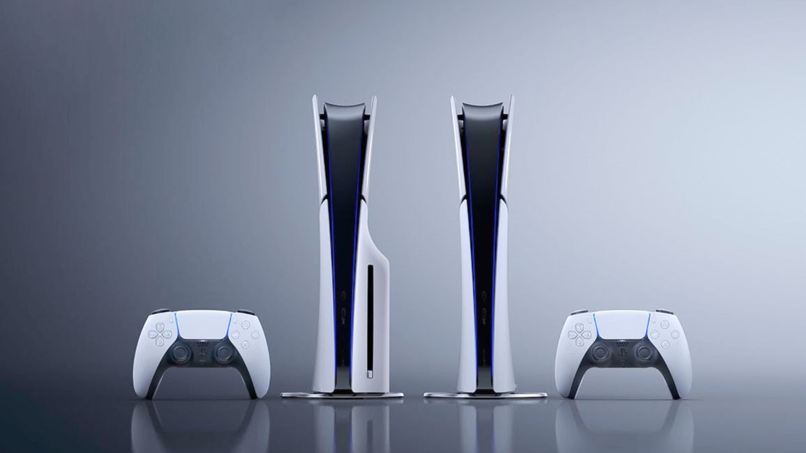

Sony's Playstation Series
One of the best gaming consoles of all time, delivering quality and fun times since 1994, and also a personal favorite of mine.

Different Playstation consoles released by Sony over the years, excluding their handheld devices.
Here is what to know about the Playstation Series:
- The original Playstion first came out in 1994, while a smaller variant called the "PS One" came out in 2000.
- Part of the 5th generation of consoles; Competed against the Sega Saturn and Nintendo 64. It is remembered for game such as Resident Evil, Crash Bandicoot, Final Fantasy 7, and many more.
- Departing from a cartridge-based approach, the PS1 instead utilized CD-ROM, which had more space.
- Sold over 102.49 million units worldwide. It made up 40% of Sony's revenue at the time, marking it as a success and the start of Sony continuing its console gaming line.
- Featured portables memory cards and introduced the Dualshock analog controllers that had haptic feedback (vibration). It could also play audio CD's.
- Released in 2000; The slim version launched in 2004 – an improvement in performance, efficiency, and design compared to the "Fat/Phat" version.
- Part of the 6th generation of consoles; Competed against the Sega Dreamcast, Microsoft Xbox, and Nintendo GameCube.
- Featured a built-in CD/DVD player and the Dualshock 2 controller. It is also backwards compatible with most of the original Playstation games, and needs a PS1 memory card if you want to save PS1 games.
- Sold over 158 million units worldwide, and is considered the best-selling gaming console of all time as of October 2024.
- Offered online features in PS2 games that provided them, so long as a network adapter is used.
- First released in 2005, and is called the PSP-1000; Its other models, the PSP-2000 and 3000, was released in 2007 and 2008. The PSP Go, a smaller and lighter version of the PSP, was launched in 2009. The PSP Street launched in 2011, and was designed to be a low cost, budget-friendly version of the original PSP – lacks a lot of features compared to the original, such as no WIFI capabilities.
- Sony's first handheld gaming device; It sold over 82.5 million units worldwide.
- Aside from playing games, it featured the ability to watch movies, listen to music, and download games through the Playstation Store. It also utilized UMD's as its method for physical games and movies.
- Released in 2006; The Slim model launched in 2009, and the Super Slim version launched in 2012.
- Competed against other 7th generation consoles: the Nintendo Wii and Microsoft's Xbox 360.
- The "Phat/Fat" model is backwards compatible with previous Playstation titles, but the Slim and Super Slim are not when it comes to PS2 games.
- Featured a built-in memory storage (from 20GB to 500GB) instead of memory cards, a cordless controller (Dualshock 3), and a Blu-ray drive. Multiplayer online gaming and digital media delivery services were also introduced through the Playstation Network.
- Sold over 87.4 million units worldwide.
- Sony's second gaming handheld release after the PSP. The PS Vita 1000 (FAT) had an OLED screen and was launched in 2012. The PS Vita 2000 (Slim), which had an LED screen and better battery life, was released in 2013.
- Estimated to have sold over 15 to 16 million units worldwide.
- Could work in conjunction with the PS3 and PS4 through Remote Play, similar to the Wii U's function of off-tv play. This means players could stream their PS3 and PS4 games anywhere in the house.
- Released in 2013. The Slim model and the Pro model (has twice the GPU power of the PS4) were released in 2016.
- Sold over 117.2 million units worldwide.
- Part of the 8th generation of gaming consoles; Competed with Microsoft's Xbox One and the Nintendo Wii U. Has plenty of memorable games such as God of War, Bloodborne, Uncharted 4, and many more.
- Emphasizes social interaction and integration with other devices and services such as the Playstation App, Remote Play, Share Play, online gaming, etc.
- Features a powerful processor and the Dualshock 4 controller that integrates a touchpad and share button. Also has a removable HDD, which allowed players to swap hard drives in and out for more storage.
- Marked as the most powerful Playstation to date, the PS5 launched in 2020. It has two variants: a PS5 with a disk drive, and a "Digital-Only" PS5, which is slightly cheaper and has no disk drive, but you can buy and install one for yourself. As for the models, the PS5 Slim was released in 2023, and the PS5 Pro model is coming this November 2024.
- Features the DualSense controllers, which has immersive haptic feedback, dynamic adaptive triggers and a built-in microphone. The console supports ray tracing, 120 FPS, steady native 4K output, and comes with a removable SSD.
- Is competing with Microsoft's Xbox Series X and S as the ninth generation of console gaming.
- Has so far sold over 62 million units worldwide

Playstation 1 (PS1)

Playstation 2 (PS2)

Playstation Portable (PSP)

Playstation 3 (PS3)

Playstation Vita (PS Vita)

Playstation 4 (PS4)

Playstation 5 (PS5)
"The name of the game is not market share, it's how fast we (Sony) can grow the industry."